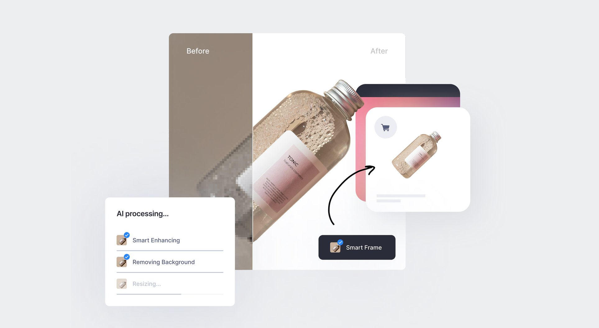
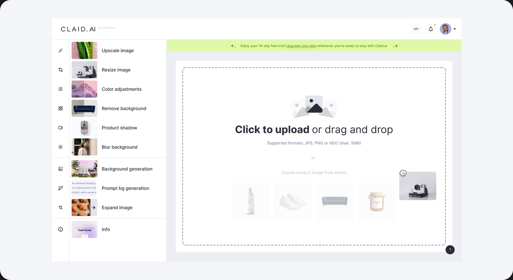
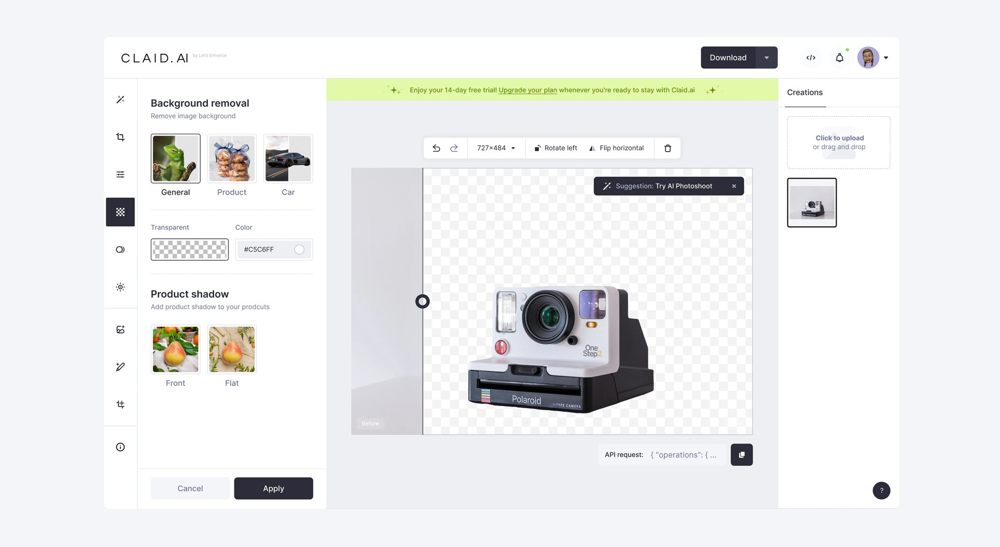
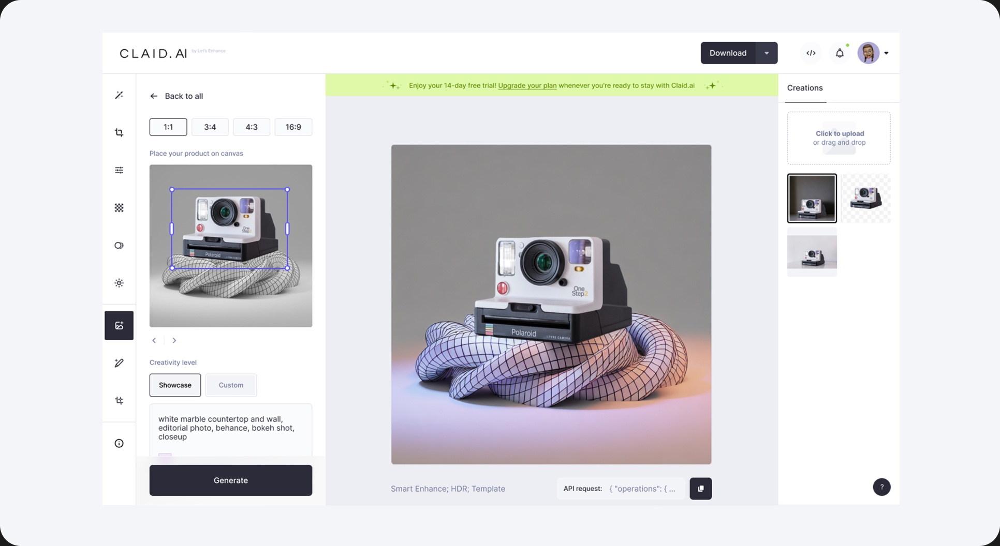
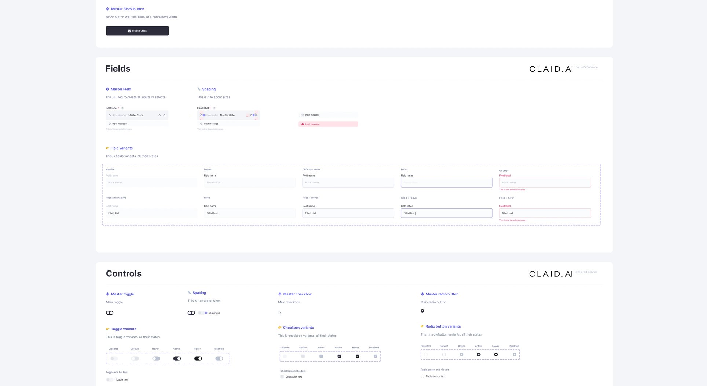
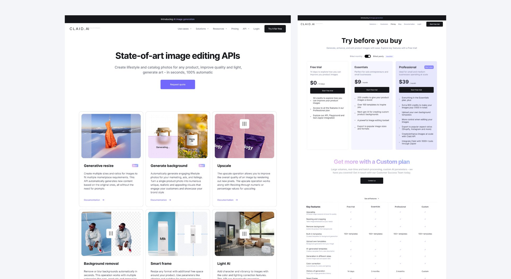

Generative AI for product photography. With Claid AI, you can edit and generate high-converting creatives for catalogs, marketing, and ad campaigns. Transform a single product photo into multiple unique, realistic, and engaging visuals that engage customers
- Scope
- Leading the UX design process 0-1; Problem discovery; Usability testing; UI & Web Design;
- Position
- Founding Product Designer

Claid AI initially started as an API product, focused on selling its API. I designed API tools and playgrounds for the startup within Let’s Enhance. When OpenAI released its first models, we immediately began exploring how to build on top of them and create solutions that would deliver greater value to our clients
I led the design for a new product vertical launch at Claid AI, a startup within Let’s Enhance. I created end-to-end product solutions and regularly presented to the CEO, Head of Product, Head of ML, and other company leaders to secure buy-in and share progress on strategic initiatives. I tackled unique design challenges at the early stage of generative AI, when users had little prior experience, and identified key feature metrics while taking ownership of their success.




